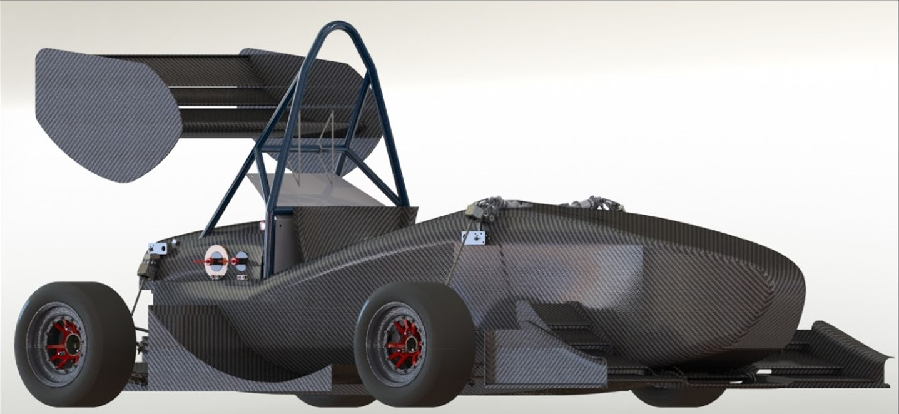
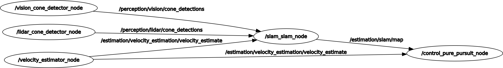
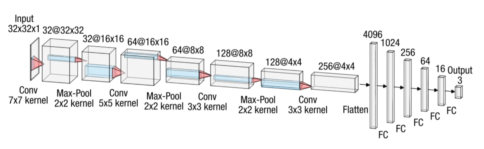
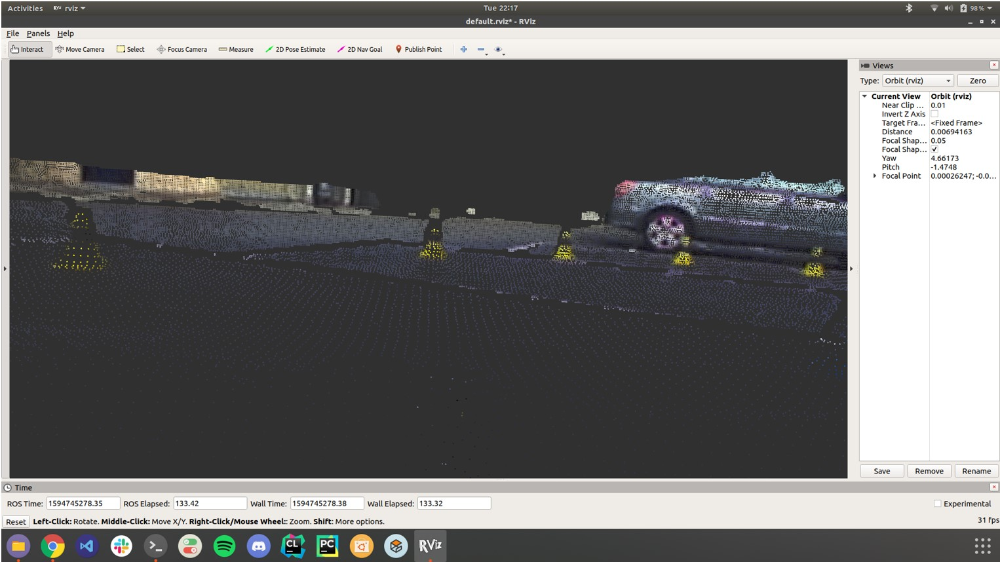
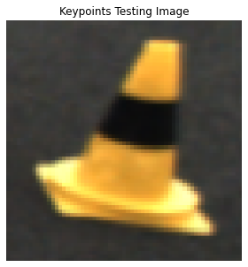
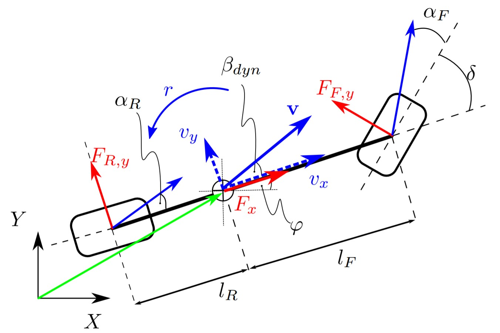
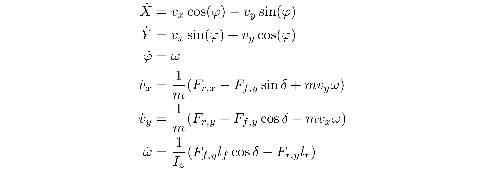
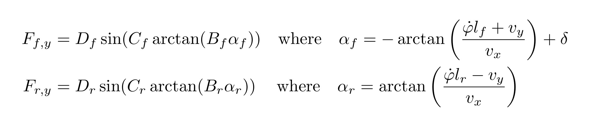
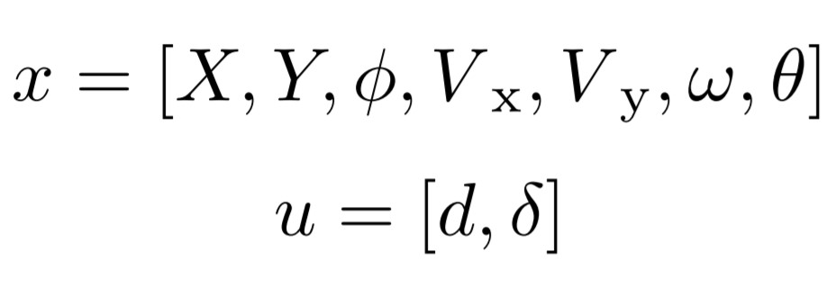
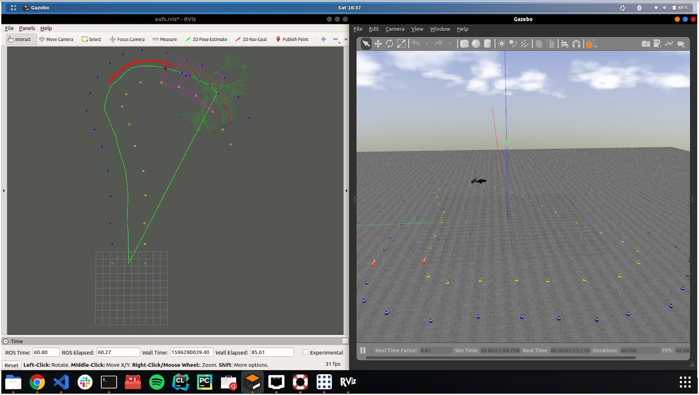

DJS Racing Driverless

At DJS Racing, the Formula Student Team of Dwarkadas J. Sanghvi College of Engineering, we are building one of the first driverless Formula Student race-car of India.
About Formula Student Driverless
Formula Student Driverless(FSD) is an international engineering competition held annualy in Hockenheim, Germany, in which multidisciplinary student teams compete with a self-developed driverless racecars every year. In this competition, each team has to race their autonomous car across 5 disciplines - Acceleration, Skidpad, Autocross, and Trackdrive. In the main event, called as Trackdrive, a car has to complete 10 laps autonomously against the clock. The track is defined by a set of traffic cones, blue cones on the left and yellow cones on the right hand side.
In this blog, I am going to introduce to you the overall implementation of a Formula Student Driverless race-car by DJS Racing, India. The race-car can drive autonomously on unknown tracks and switch to Model Predictive Control after track exploration, mapping and loop-closure detection in the first lap.
Software Architecture.
We chose the Robot Operating System as our primary framework for software development.
System Overview

High Level Architecture

3D Perception
3D Traffic Cone Detection and Color Estimation using Ouster OS-1 LiDAR
CNN Architecture for Color Estimation using LiDAR Intensity Patterns

Stereo 3D Object Dectection
Stereo feature matching is then performed using the Semi-Global Block Matching (SGBM) algorithm to obtain the disparity map and 3D coordinates of the traffic cones.
3D pointcloud obtained after occlusion reduction in the disparity map

Monocular 3D Object Detection
Monocular 3D Object Detection is performed using the Perspective 3-Point transformation with the PnP RANSAC algorithm. This is considering the fact that we know the exact physical dimensions of each cone. Keypoints for each cone image patch are obtained using the RektNet CNN architecture by MIT Driverless (Accurate, Low-Latency Visual Perception for Autonomous Racing:Challenges, Mechanisms, and Practical Solutions. Kieran Strobel et al., 2020).


Occlusion of background cones is handled by outlier filtering.
Simultaneous Localization and Mapping
The landmark-based FastSLAM algorithm was chosen for its robustness because of multiple-hypothesis and proposal sampling.
Path Planning
RRT + Delaunay Triangulation for Waypoints Generation
Model Predictive Control
Dynamic Bicycle Model

Vehicle Dynamics

Tire Model

State Input

The lateral and cross-track errors are defined as
cte` = cte - v * sin(epsi) * dt
epsi` = epsi + v / Lf * (-delta) * dt
And hence, the cost function is defined as
J = Q_cte * cte^2 + Q_epsi * epsi^2 + Q_v * (v - vmax)^2 + Q_delta * delta^2
+ Q_a * a^2 + F * (a` - a)^2 + Q_ddelta * (delta` - delta)^2

The optimization is problem is then solved directly using the IPOPT non-linear optimization library over 15 steps for a horizon of 1.5 secs.
However, an improvement is required here as IPOPT is not designed for real-time systems and considerably slows down with an increase in sequence size. Hence, we need to use a convex optimization library such as HPIPM.
Simulation and CI/CD Infrastructure
Custom Simulator Desgined with Gazebo and Ignition Libraries
